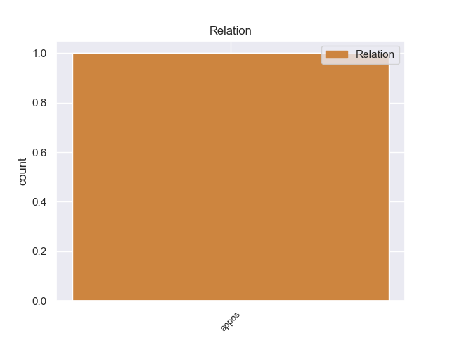
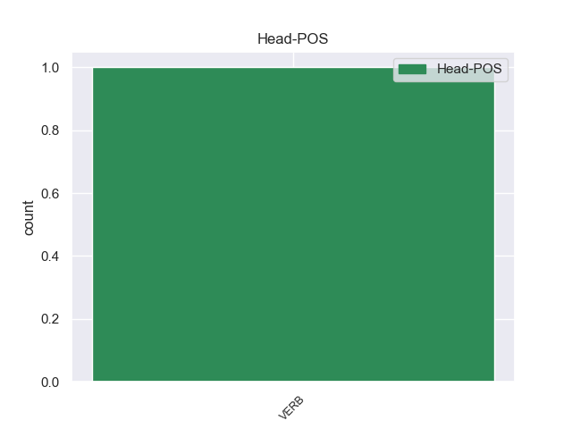
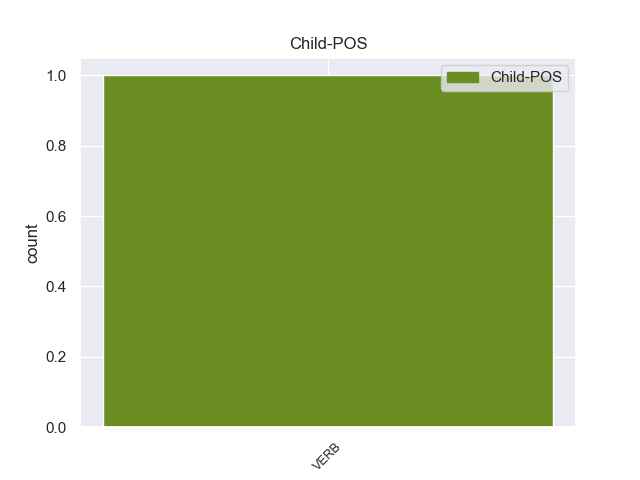

Distribution of features within this leaf



Agreement Rules sorted by frequency.
- When the dependent token is the adverbial clause modifier(advcl) of the head token, and the head token is VERB
1 I _ _ _ _ 0 _ _ _
2 got _ _ _ _ 0 _ _ _
3 the _ _ _ _ 0 _ _ _
4 order _ _ _ _ 0 _ _ _
5 completed _ _ _ _ 0 _ _ _
6 , _ _ _ _ 0 _ _ _
7 and _ _ _ _ 0 _ _ _
8 then _ _ _ _ 0 _ _ _
9 questioned question VERB VBD Mood=Ind|Tense=Past|VerbForm=Fin 0 _ _ _
10 the _ _ _ _ 0 _ _ _
11 technician _ _ _ _ 0 _ _ _
12 since _ _ _ _ 0 _ _ _
13 it _ _ _ _ 0 _ _ _
14 came come VERB VBD Mood=Ind|Tense=Past|VerbForm=Fin 9 advcl 9:advcl:since _
15 out _ _ _ _ 0 _ _ _
16 about _ _ _ _ 0 _ _ _
17 $ _ _ _ _ 0 _ _ _
18 40 _ _ _ _ 0 _ _ _
19 less _ _ _ _ 0 _ _ _
20 than _ _ _ _ 0 _ _ _
21 I _ _ _ _ 0 _ _ _
22 expected _ _ _ _ 0 _ _ _
23 . _ _ _ _ 0 _ _ _
1 They _ _ _ _ 0 _ _ _
2 promised promise VERB VBD Mood=Ind|Tense=Past|VerbForm=Fin 0 _ _ _
3 it _ _ _ _ 0 _ _ _
4 'd _ _ _ _ 0 _ _ _
5 be _ _ _ _ 0 _ _ _
6 done _ _ _ _ 0 _ _ _
7 within _ _ _ _ 0 _ _ _
8 an _ _ _ _ 0 _ _ _
9 hour _ _ _ _ 0 _ _ _
10 , _ _ _ _ 0 _ _ _
11 so _ _ _ _ 0 _ _ _
12 I _ _ _ _ 0 _ _ _
13 waited wait VERB VBD Mood=Ind|Tense=Past|VerbForm=Fin 2 parataxis 2:parataxis _
14 in _ _ _ _ 0 _ _ _
15 the _ _ _ _ 0 _ _ _
16 lobby _ _ _ _ 0 _ _ _
17 . _ _ _ _ 0 _ _ _
1 Seriously _ _ _ _ 0 _ _ _
2 : _ _ _ _ 0 _ _ _
3 do do AUX VB Mood=Imp|VerbForm=Fin 5 aux 5:aux _
4 not _ _ _ _ 0 _ _ _
5 waste waste VERB VB Mood=Imp|VerbForm=Fin 0 _ _ _
6 your _ _ _ _ 0 _ _ _
7 time _ _ _ _ 0 _ _ _
8 . _ _ _ _ 0 _ _ _
1 We _ _ _ _ 0 _ _ _
2 hauled _ _ _ _ 0 _ _ _
3 the _ _ _ _ 0 _ _ _
4 horse _ _ _ _ 0 _ _ _
5 to _ _ _ _ 0 _ _ _
6 Windsor _ _ _ _ 0 _ _ _
7 and _ _ _ _ 0 _ _ _
8 got get VERB VBD Mood=Ind|Tense=Past|VerbForm=Fin 0 _ _ _
9 him _ _ _ _ 0 _ _ _
10 treated treat VERB VBD Mood=Ind|Tense=Past|VerbForm=Fin 8 xcomp 8:xcomp _
11 there _ _ _ _ 0 _ _ _
12 . _ _ _ _ 0 _ _ _
1 And _ _ _ _ 0 _ _ _
2 it _ _ _ _ 0 _ _ _
3 's be AUX VBZ Mood=Ind|Number=Sing|Person=3|Tense=Pres|VerbForm=Fin 10 cop 10:cop _
4 not _ _ _ _ 0 _ _ _
5 all _ _ _ _ 0 _ _ _
6 about _ _ _ _ 0 _ _ _
7 how _ _ _ _ 0 _ _ _
8 much _ _ _ _ 0 _ _ _
9 you _ _ _ _ 0 _ _ _
10 earn earn VERB VBP Mood=Ind|Tense=Pres|VerbForm=Fin 0 _ _ _
11 , _ _ _ _ 0 _ _ _
12 cost _ _ _ _ 0 _ _ _
13 of _ _ _ _ 0 _ _ _
14 living _ _ _ _ 0 _ _ _
15 is _ _ _ _ 0 _ _ _
16 much _ _ _ _ 0 _ _ _
17 higher _ _ _ _ 0 _ _ _
18 in _ _ _ _ 0 _ _ _
19 many _ _ _ _ 0 _ _ _
20 cities _ _ _ _ 0 _ _ _
21 in _ _ _ _ 0 _ _ _
22 Australia _ _ _ _ 0 _ _ _
23 . _ _ _ _ 0 _ _ _
1 Maybe _ _ _ _ 0 _ _ _
2 do _ _ _ _ 0 _ _ _
3 volunteer _ _ _ _ 0 _ _ _
4 work _ _ _ _ 0 _ _ _
5 at _ _ _ _ 0 _ _ _
6 the _ _ _ _ 0 _ _ _
7 humane _ _ _ _ 0 _ _ _
8 society _ _ _ _ 0 _ _ _
9 , _ _ _ _ 0 _ _ _
10 walk walk VERB VB Mood=Imp|VerbForm=Fin 0 _ _ _
11 dogs _ _ _ _ 0 _ _ _
12 , _ _ _ _ 0 _ _ _
13 groom groom VERB VB Mood=Imp|VerbForm=Fin 10 list 10:list _
14 the _ _ _ _ 0 _ _ _
15 animals _ _ _ _ 0 _ _ _
16 etc _ _ _ _ 0 _ _ _
17 . _ _ _ _ 0 _ _ _
1 Again _ _ _ _ 0 _ _ _
2 there _ _ _ _ 0 _ _ _
3 is be VERB VBZ Mood=Ind|Number=Sing|Person=3|Tense=Pres|VerbForm=Fin 0 _ _ _
4 no _ _ _ _ 0 _ _ _
5 official _ _ _ _ 0 _ _ _
6 written _ _ _ _ 0 _ _ _
7 statement _ _ _ _ 0 _ _ _
8 from _ _ _ _ 0 _ _ _
9 Sistani _ _ _ _ 0 _ _ _
10 's _ _ _ _ 0 _ _ _
11 office _ _ _ _ 0 _ _ _
12 confirming _ _ _ _ 0 _ _ _
13 this _ _ _ _ 0 _ _ _
14 allegation _ _ _ _ 0 _ _ _
15 , _ _ _ _ 0 _ _ _
16 which _ _ _ _ 0 _ _ _
17 I _ _ _ _ 0 _ _ _
18 think think VERB VBP Mood=Ind|Tense=Pres|VerbForm=Fin 3 acl:relcl 3:acl:relcl _
19 is _ _ _ _ 0 _ _ _
20 intentional _ _ _ _ 0 _ _ _
21 . _ _ _ _ 0 _ _ _
1 For _ _ _ _ 0 _ _ _
2 more _ _ _ _ 0 _ _ _
3 info _ _ _ _ 0 _ _ _
4 on _ _ _ _ 0 _ _ _
5 lo _ _ _ _ 0 _ _ _
6 - _ _ _ _ 0 _ _ _
7 fi _ _ _ _ 0 _ _ _
8 photography _ _ _ _ 0 _ _ _
9 , _ _ _ _ 0 _ _ _
10 check check VERB VB Mood=Imp|VerbForm=Fin 0 _ _ _
11 put put VERB VB Mood=Imp|VerbForm=Fin 10 compound:prt 10:compound:prt _
12 my _ _ _ _ 0 _ _ _
13 website _ _ _ _ 0 _ _ _
14 : _ _ _ _ 0 _ _ _
1 Older _ _ _ _ 0 _ _ _
2 males male VERB VBZ Mood=Ind|Number=Sing|Person=3|Tense=Pres|VerbForm=Fin 4 nsubj 4:nsubj|6:nsubj:xsubj _
3 often _ _ _ _ 0 _ _ _
4 tend tend VERB VBP Mood=Ind|Tense=Pres|VerbForm=Fin 0 _ _ _
5 to _ _ _ _ 0 _ _ _
6 have _ _ _ _ 0 _ _ _
7 urinary _ _ _ _ 0 _ _ _
8 tract _ _ _ _ 0 _ _ _
9 issues _ _ _ _ 0 _ _ _
10 , _ _ _ _ 0 _ _ _
11 so _ _ _ _ 0 _ _ _
12 your _ _ _ _ 0 _ _ _
13 cat _ _ _ _ 0 _ _ _
14 has _ _ _ _ 0 _ _ _
15 done _ _ _ _ 0 _ _ _
16 very _ _ _ _ 0 _ _ _
17 well _ _ _ _ 0 _ _ _
18 . _ _ _ _ 0 _ _ _
1 He _ _ _ _ 0 _ _ _
2 tried _ _ _ _ 0 _ _ _
3 to _ _ _ _ 0 _ _ _
4 tell _ _ _ _ 0 _ _ _
5 me _ _ _ _ 0 _ _ _
6 it _ _ _ _ 0 _ _ _
7 was _ _ _ _ 0 _ _ _
8 when _ _ _ _ 0 _ _ _
9 I _ _ _ _ 0 _ _ _
10 told tell VERB VBD Mood=Ind|Tense=Past|VerbForm=Fin 11 reparandum 11:reparandum _
11 asked ask VERB VBD Mood=Ind|Tense=Past|VerbForm=Fin 0 _ _ _
12 him _ _ _ _ 0 _ _ _
13 if _ _ _ _ 0 _ _ _
14 he _ _ _ _ 0 _ _ _
15 knew _ _ _ _ 0 _ _ _
16 what _ _ _ _ 0 _ _ _
17 fps _ _ _ _ 0 _ _ _
18 stood _ _ _ _ 0 _ _ _
19 for _ _ _ _ 0 _ _ _
20 and _ _ _ _ 0 _ _ _
21 he _ _ _ _ 0 _ _ _
22 had _ _ _ _ 0 _ _ _
23 no _ _ _ _ 0 _ _ _
24 clue _ _ _ _ 0 _ _ _
25 . _ _ _ _ 0 _ _ _
Disagree Examples:
1 Even _ _ _ _ 0 _ _ _
2 the _ _ _ _ 0 _ _ _
3 IP _ _ _ _ 0 _ _ _
4 and _ _ _ _ 0 _ _ _
5 ICDC _ _ _ _ 0 _ _ _
6 have _ _ _ _ 0 _ _ _
7 abandoned _ _ _ _ 0 _ _ _
8 the _ _ _ _ 0 _ _ _
9 neighbourhood _ _ _ _ 0 _ _ _
10 , _ _ _ _ 0 _ _ _
11 and _ _ _ _ 0 _ _ _
12 those _ _ _ _ 0 _ _ _
13 are _ _ _ _ 0 _ _ _
14 trained _ _ _ _ 0 _ _ _
15 and _ _ _ _ 0 _ _ _
16 armed _ _ _ _ 0 _ _ _
17 , _ _ _ _ 0 _ _ _
18 so _ _ _ _ 0 _ _ _
19 do do AUX VBP Mood=Ind|Tense=Pres|VerbForm=Fin 21 aux 21:aux SpaceAfter=No
20 n't _ _ _ _ 0 _ _ _
21 expect expect VERB VB Mood=Imp|VerbForm=Fin 0 _ _ _
22 scared _ _ _ _ 0 _ _ _
23 civilians _ _ _ _ 0 _ _ _
24 to _ _ _ _ 0 _ _ _
25 do _ _ _ _ 0 _ _ _
26 anything _ _ _ _ 0 _ _ _
27 except _ _ _ _ 0 _ _ _
28 to _ _ _ _ 0 _ _ _
29 hide _ _ _ _ 0 _ _ _
30 inside _ _ _ _ 0 _ _ _
31 and _ _ _ _ 0 _ _ _
32 pray _ _ _ _ 0 _ _ _
33 a _ _ _ _ 0 _ _ _
34 helicopter _ _ _ _ 0 _ _ _
35 or _ _ _ _ 0 _ _ _
36 a _ _ _ _ 0 _ _ _
37 tank _ _ _ _ 0 _ _ _
38 does _ _ _ _ 0 _ _ _
39 n't _ _ _ _ 0 _ _ _
40 bomb _ _ _ _ 0 _ _ _
41 them _ _ _ _ 0 _ _ _
42 , _ _ _ _ 0 _ _ _
43 and _ _ _ _ 0 _ _ _
44 also _ _ _ _ 0 _ _ _
45 how _ _ _ _ 0 _ _ _
46 are _ _ _ _ 0 _ _ _
47 American _ _ _ _ 0 _ _ _
48 soldiers _ _ _ _ 0 _ _ _
49 going _ _ _ _ 0 _ _ _
50 to _ _ _ _ 0 _ _ _
51 distinguish _ _ _ _ 0 _ _ _
52 the _ _ _ _ 0 _ _ _
53 brave _ _ _ _ 0 _ _ _
54 and _ _ _ _ 0 _ _ _
55 valiant _ _ _ _ 0 _ _ _
56 civilians _ _ _ _ 0 _ _ _
57 from _ _ _ _ 0 _ _ _
58 the _ _ _ _ 0 _ _ _
59 Fedayeen _ _ _ _ 0 _ _ _
60 ? _ _ _ _ 0 _ _ _
1 Please _ _ _ _ 0 _ _ _
2 come _ _ _ _ 0 _ _ _
3 and _ _ _ _ 0 _ _ _
4 check check VERB VB Mood=Imp|VerbForm=Fin 0 _ _ _
5 it _ _ _ _ 0 _ _ _
6 out _ _ _ _ 0 _ _ _
7 if _ _ _ _ 0 _ _ _
8 you _ _ _ _ 0 _ _ _
9 get get VERB VBP Mood=Ind|Tense=Pres|VerbForm=Fin 4 advcl 4:advcl:if _
10 the _ _ _ _ 0 _ _ _
11 time _ _ _ _ 0 _ _ _
12 ! _ _ _ _ 0 _ _ _
1 In _ _ _ _ 0 _ _ _
2 early _ _ _ _ 0 _ _ _
3 February _ _ _ _ 0 _ _ _
4 , _ _ _ _ 0 _ _ _
5 India _ _ _ _ 0 _ _ _
6 charged charge VERB VBD Mood=Ind|Tense=Past|VerbForm=Fin 0 _ _ _
7 34 _ _ _ _ 0 _ _ _
8 Arakan _ _ _ _ 0 _ _ _
9 separatists _ _ _ _ 0 _ _ _
10 from _ _ _ _ 0 _ _ _
11 Myanmar _ _ _ _ 0 _ _ _
12 with _ _ _ _ 0 _ _ _
13 hiding _ _ _ _ 0 _ _ _
14 in _ _ _ _ 0 _ _ _
15 the _ _ _ _ 0 _ _ _
16 Landfall _ _ _ _ 0 _ _ _
17 Islands _ _ _ _ 0 _ _ _
18 , _ _ _ _ 0 _ _ _
19 part _ _ _ _ 0 _ _ _
20 of _ _ _ _ 0 _ _ _
21 the _ _ _ _ 0 _ _ _
22 Andaman _ _ _ _ 0 _ _ _
23 Islands _ _ _ _ 0 _ _ _
24 group _ _ _ _ 0 _ _ _
25 ( _ _ _ _ 0 _ _ _
26 see see VERB VB Mood=Imp|VerbForm=Fin 6 parataxis 6:parataxis _
27 end _ _ _ _ 0 _ _ _
28 note _ _ _ _ 0 _ _ _
29 ) _ _ _ _ 0 _ _ _
30 . _ _ _ _ 0 _ _ _
1 Do do AUX VBP Mood=Ind|Tense=Pres|VerbForm=Fin 3 aux 3:aux SpaceAfter=No
2 n't _ _ _ _ 0 _ _ _
3 take take VERB VB Mood=Imp|VerbForm=Fin 0 _ _ _
4 that _ _ _ _ 0 _ _ _
5 deal _ _ _ _ 0 _ _ _
6 out _ _ _ _ 0 _ _ _
7 until _ _ _ _ 0 _ _ _
8 I _ _ _ _ 0 _ _ _
9 look _ _ _ _ 0 _ _ _
10 at _ _ _ _ 0 _ _ _
11 it _ _ _ _ 0 _ _ _
12 . _ _ _ _ 0 _ _ _
1 Do _ _ _ _ 0 _ _ _
2 n't _ _ _ _ 0 _ _ _
3 take take VERB VB Mood=Imp|VerbForm=Fin 0 _ _ _
4 that _ _ _ _ 0 _ _ _
5 deal _ _ _ _ 0 _ _ _
6 out _ _ _ _ 0 _ _ _
7 until _ _ _ _ 0 _ _ _
8 I _ _ _ _ 0 _ _ _
9 look look VERB VBP Mood=Ind|Tense=Pres|VerbForm=Fin 3 advcl 3:advcl:until _
10 at _ _ _ _ 0 _ _ _
11 it _ _ _ _ 0 _ _ _
12 . _ _ _ _ 0 _ _ _